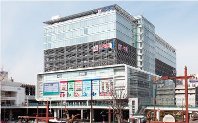

トップ ／ アクセス
高崎駅東口から、徒歩3分。
新幹線と在来線が集まる高崎駅のすぐそば。大型ショッピングモールや複合施設がそろっていて、放課後も充実します。
〒370-0841 群馬県高崎市栄町13-2
電話 027-324-8511（9:00〜17:00、土日祝を除く）

自分の駅から、CIDまで
最寄り駅に近いものを選ぶと、乗る路線が分かります。
路線は今のサイトの「電車の主な所要時間」から。所要時間の数字は今のサイトでは画像の中にあり読み取れなかったため、要確認です。
放課後、寄れる場所
寄りたい場所を押してみてください。